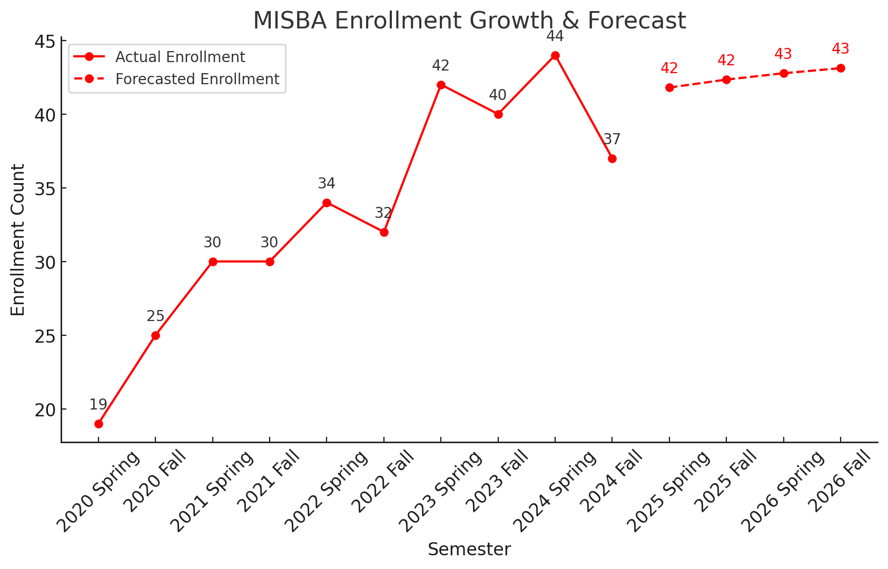
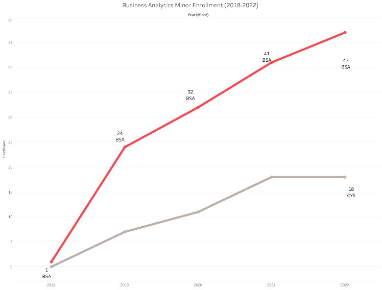

Service
Service Summary
Since beginning my career at Bradley University in 2018, I have felt profoundly nurtured and supported by my department and the Foster College of Business. During my first three years (2018–2021), I was shielded from significant service responsibilities, allowing me to focus on foundational contributions such as serving on the Business Analytics Ad Hoc Committee (2018–2020). In this role, I collaborated on curriculum and course development for the new Business Analytics major and minor. Substantial effort was dedicated to designing these programs, which required balancing teaching excellence with behind-the-scenes initiatives.
These included attending admissions events (visit days), conducting one-on-one meetings with prospective families, sending handwritten postcards to prospective students, organizing annual Business Analytics Days (2021, 2023), coordinating industry speaker engagements, and more. The results of these collective efforts have been remarkable: the Business Analytics related majors saw a 110% enrollment increase from 2020 to 2024, while the Business Analytics minor grew by 200% between 2019 and 2022. I am committed to sustaining this momentum and driving further growth in the coming years. One promising opportunity is launching an online Business Analytics degree. While progress has been made—including course redesigns for online delivery and collaboration with Meteor Learning and educational publishers—this initiative remains in development due to external challenges. Below are charts outlining the growth for MISBA major and minor.
 University Service
Departmental Service
- • Committee Member, [Committee Name]
- • Faculty Advisor, [Student Organization]
University-wide Service
- • Member, [University Committee]
- • Participant, [University Initiative]
Professional Service
Conference Service
- • Program Committee Member, [Conference]
- • Reviewer, [Conference]
Journal Service
- • Reviewer, [Journal Name]
- • Editorial Board Member, [Journal]
Community Outreach
Community Engagement
- • Volunteer, [Community Program]
- • Organizer, [Outreach Event]